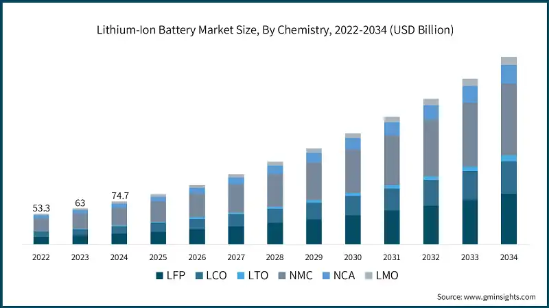
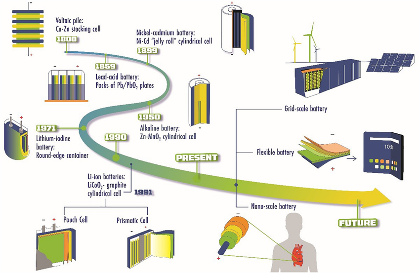
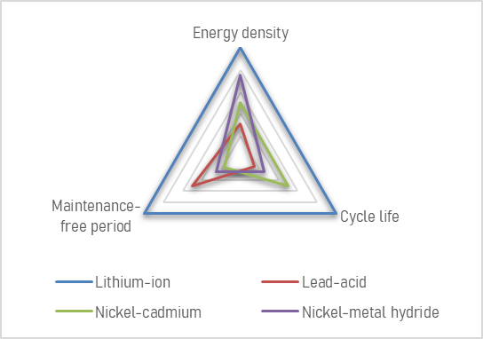
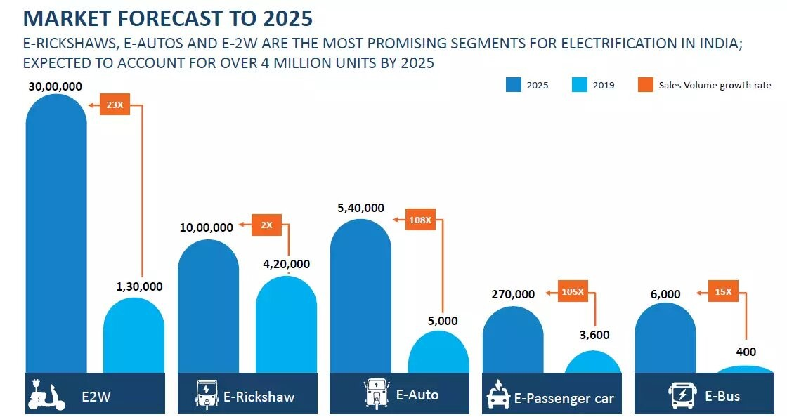
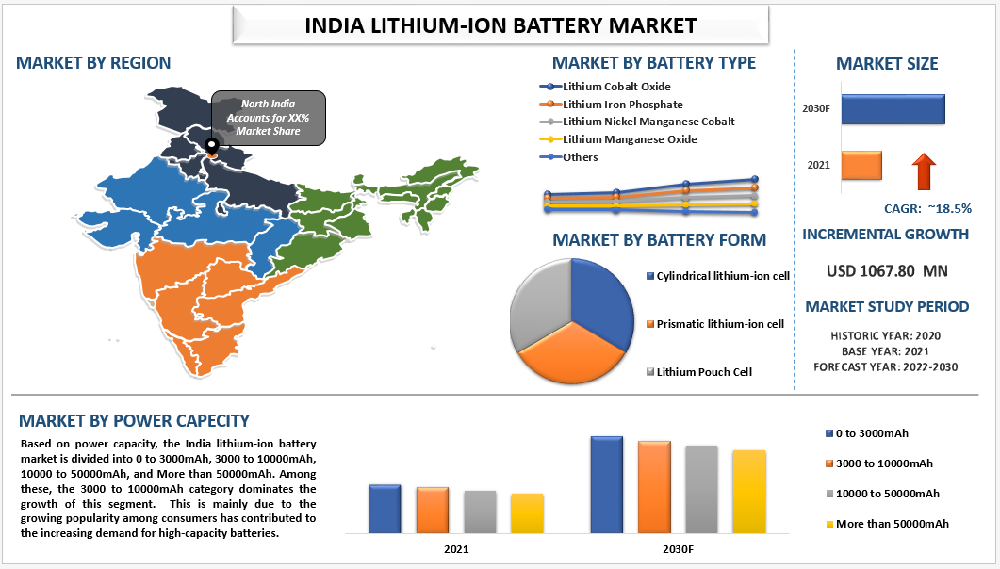
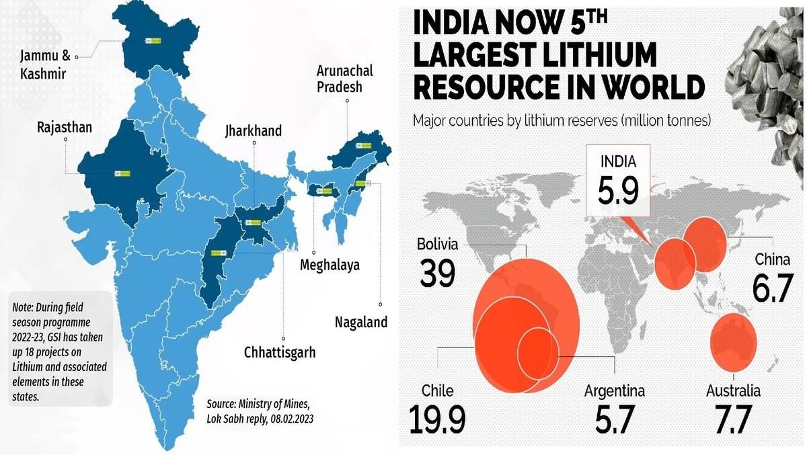

The lithium-ion battery market is poised for significant growth and transformation in the coming years, driven by increasing demand across various sectors, particularly electric vehicles (EVs) and renewable energy storage. Here are the key trends and forecasts shaping the future of this industry.
Market Growth Projections
- Rapid Expansion: The global lithium-ion battery market is expected to grow from approximately $75.99 billion in 2025 to $119.17 billion by 2030, reflecting a compound annual growth rate (CAGR) of 9.43%.
- Long-term Forecasts: By 2034, the market could reach around $499.31 billion, accelerating at a CAGR of 17.69% from 2025 to 2034.

Evolution of batteries:
- 1799: Voltaic pile, the first true battery, invented by Alessandro Volta.
- 1836: Daniell cell, an improved version of the voltaic pile, invented by John Frederic Daniell.
- 1859: Lead-acid battery, the first rechargeable battery, invented by Gaston Planté.
- 1866: Leclanché cell, an early form of dry cell battery, invented by Georges Leclanché.
- 1887: Dry cell battery (further development of Leclanché cell)
- 1899: Nickel-cadmium (NiCd) battery, an early rechargeable alkaline battery, invented by Waldemar Jungner.
- 1914: Nickel-iron battery, invented by Thomas Edison, known for its long life.
- 1950s: Commercialization of the alkaline battery.
- 1959: Silver-zinc battery, offering high energy density but at a higher cost.
- 1980: Lithium battery (non-rechargeable) first commercialized.
- 1991: Lithium-ion (Li-ion) battery commercialized by Sony.
- Late 1990s/Early 2000s: Nickel-metal hydride (NiMH) batteries gain popularity.
Ongoing research and development of advanced battery technologies, including solid-state batteries, and improvements to Li-ion.

Why Lithium-ion Dominates:
Lithium-ion technology has become the industry standard, offering:
- Superior Energy Density: 240 Wh/Kg at the cell level, enabling lightweight and compact designs.
- Extended Lifecycle: 500-1,000 cycles at 50% Depth of Discharge, ensuring longevity.
- Minimal Self-Discharge: Only 1.5-2% per month, maintaining charge efficiency.
- Rapid Charging Capabilities: Supports fast charging, reducing downtime.
- High Efficiency: 90-95% round-trip efficiency, minimizing energy loss.
- Low Maintenance: No periodic discharge required, unlike lead-acid batteries.
- Versatile Applications: Widely used in EVs, energy storage, and consumer electronics.

Driving Factors
- Electric Vehicles: The surge in EV adoption is a primary driver for lithium-ion battery demand, with projections indicating that batteries for mobility applications will account for about 4,300 GWh of the total demand by 2030. It has been forecast that over 85 million electric vehicles (EVs) will be on roads worldwide by the end of 2025, with India expected to see 500,000 EVs during the same period, largely due to government incentives.
- Renewable Energy Storage: The expansion of solar power systems has created a substantial need for batteries to store excess energy, particularly as solar PV capacity continues to rise globally.

Innovations in Battery Technology
- Silicon Anodes: Research is focusing on silicon anodes as a replacement for graphite. Silicon can store more lithium ions, leading to higher energy density and better performance in high-power applications, making it ideal for EVs.
- Solid-State Batteries: These batteries utilize solid electrolytes instead of liquid ones, potentially enhancing safety and energy density while prolonging battery life. They represent a significant innovation on the horizon.
- Recycling Technologies: As demand grows, effective recycling methods are being developed to recover valuable materials from used batteries. This not only supports sustainability but also contributes to a circular economy in battery production.
Regional Insights into the Lithium-ion Battery Market
The lithium-ion battery market exhibits significant regional variations, driven by factors such as technological advancements, government policies, and consumer demand. Here’s a detailed overview of the key regions shaping this industry:
Asia-Pacific
Asia-Pacific dominates the global lithium-ion battery market, accounting for approximately 53% of the market share in 2024. China is the largest player, recognized as the world's production hub for lithium-ion batteries. China alone accounted for over 50% of global EV sales in recent years.
- Future Projections: The Asia-Pacific market is projected to grow significantly, reaching around $267.13 billion by 2034, with a CAGR of 17.80% from 2025 to 2034.
India is experiencing a significant transformation in its lithium-ion battery market, driven by various factors that highlight its potential for growth and innovation. Here’s an overview of the current landscape:
Market Overview
- Growth Projections: The Indian lithium-ion battery market is estimated to grow from $5.78 billion in 2025 to approximately $16.09 billion by 2030, reflecting a robust compound annual growth rate (CAGR) of 22.72% during this period.
- Current Size: As of 2023, the market was valued at around $2.8 billion, with expectations to reach approximately $8.7 billion by 2030.

Key Driving Factors
- Electric Vehicle Adoption: The automotive segment is a major contributor, holding about 41% of the market share in 2024. The Indian government aims for significant electric vehicle (EV) penetration, targeting 30% for private cars and 80% for two and three-wheelers by 2030.
- Consumer Electronics Demand: The portable electronics sector, particularly smartphones and laptops, is driving demand for lithium-ion batteries. India has emerged as a major smartphone market, with shipments reaching over 144 million in 2023, further fueled by the rollout of 5G technology.
- Domestic Lithium Reserves: The discovery of substantial lithium reserves in Jammu and Kashmir (approximately 5.9 million tonnes) has the potential to reduce India's dependency on imports and attract investments from major manufacturers like Tata Group, which plans to invest $1.6 billion in a new battery cell factory.

Challenges Ahead
- Safety Concerns: Despite advancements, safety issues surrounding lithium-ion batteries remain a challenge. Ongoing research aims to address these through alternative chemistries and improved manufacturing processes.
- Environmental Impact: The industry faces pressure to enhance sustainability practices. Innovations aimed at reducing environmental footprints and improving recyclability are critical as regulations tighten globally.
Conclusion
The future of lithium-ion batteries is bright, characterized by robust growth driven by technological innovations and increasing demand from electric vehicles and renewable energy sectors. As companies invest in new technologies and manufacturing capabilities, the industry is set to evolve rapidly over the next decade, promising exciting developments for both consumers and manufacturers alike.